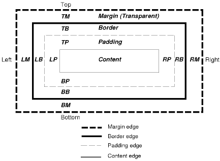

Lesson 3.6 - Technical Blog
by Jim O'Neal on November 29, 2015
For this assignment we were instructed to choose a topic to research and then write about it. I chose to research the difference between margin, border, and padding.
The difference between the three can be easily explained by the following picture.
Basically the padding is what exists between the content of a block and the border, the margin is what exists between the border and the edge of the block, and the border is what is in the middle. All three of these things can be non-existent, or they can have a thickness which can be specified using two different methods. Borders and padding can have a background, but the margin is transparent and will show whatever background it overlaps.
You can specify margin or padding on each side of the block individually, or all on one line as shown in the examples below. When the margin or padding is specified all on one line, the first number is the top and then rotates clockwise to right, bottom, and left.
padding-right: 0px;
padding-bottom: 0px;
padding-left: 0px;
padding: 0px 0px 0px 0px;
If you want your entire block to take up a certain amount of space, the important thing to remember is that your border has a thickness, and the padding thickness extends to the inside edge of the border, and the margin thickness doesn't start until the outside edge of the border.
Thanks for reading my blog, I hope you learned something about padding, border, and margin!